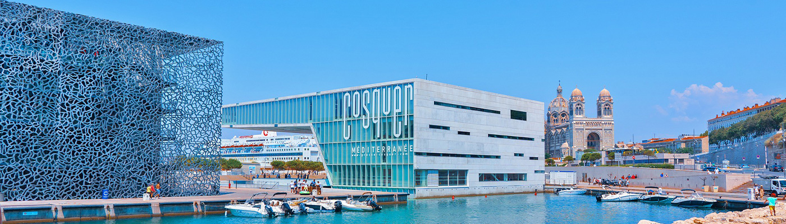
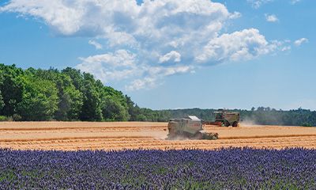
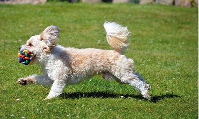
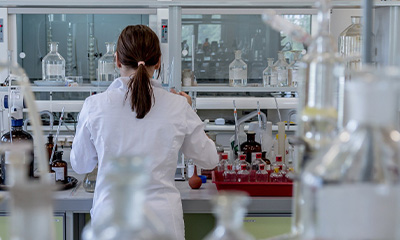
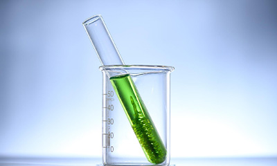

home > 사업소개 > R & D
R & D
R & D 란 Research and Development 의 약자로 연구개발이라 합니다.
삼천리는 다양한 분야에서 발걸음을 멈추지 않기 위해 연구를 진행하고있습니다.

탄소중립 연구소
삼천리는 정부의 2050 탄소중립 추진전략에 부합해 도시가스가 탄소를 마이너스 배출하도록 전환하는 연구개발을 수행하고 있습니다. 대표이사 직속 탄소중립연구소로 기존 연구소 기능을 확대 개편함으로써 도시가스 이용 고객의 탄소중립 실현에 공헌하고 신에너지 사업 분야에 적극적으로 진출할 계획입니다.
-
도시가스 연료 탈탄소화
공급을 위한 기술 연구 탄소중립 핵심수단으로써 수소에 주목하고 사업진입을 위해 전체 value chain에 대한 필요기술을 연구하고 있습니다. 생산분야에서는 청록수소 등 청정수소 생산기술을 연구하고 있으며 유통분야에서는 기존 도시가스배관 활용 또는 수소 전용배관, 저탄소 도시가스 공급 기술을 검토하고 있습니다.그리고 이용분야에서는 순수소 연료전지 등 수소이용기술을 연구하고 있습니다.
-
기술 개발
적용 기반 마련 탄소중립을 실현하기 위한 전략을 수립하고 ICT 기반의 배출권 인증 및 활용 방법론과 기술 정립에 대한 부분 등 그룹 탄소감축 인증 및 활용 방안 도출과 관련된 연구를 수행해 나갈 것입니다.
Nox 배출권 거래 지원
S-Power, 안산도시개발, 광명열병합사업단 등 다양한 사업체에 NOx 배출권 거래를 지원하고 있습니다. 10t 을 기준으로 거래하고 있으며, 깨끗하고 안전한 에너지를 위해 R&D를 지키겠습니다.